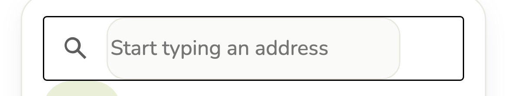
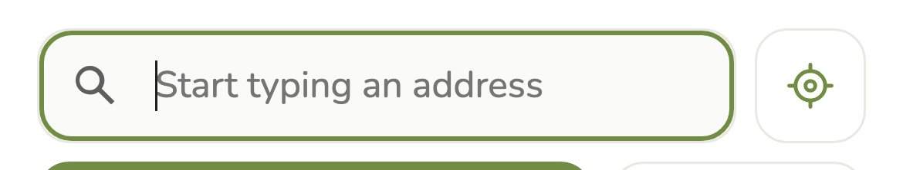
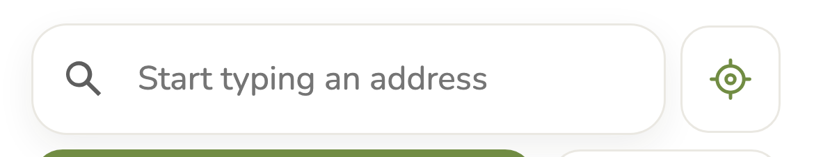
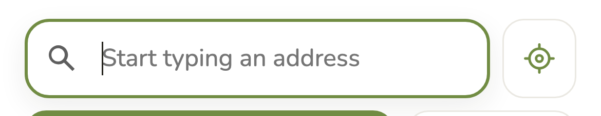
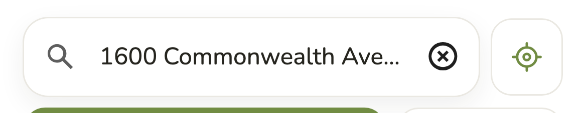
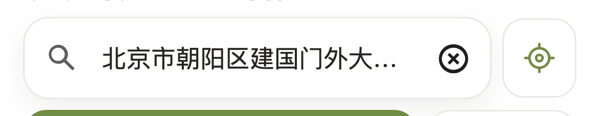

Each prototype below is live: type in the search, tap a map pin, open Filters, open a place. Nothing here touches the working app or calls an API.
Latest direction: Home base. The address is set once, then the app opens on real places. The three concepts below are kept as earlier exploration, and their recommendation came before this change.
The map is the page. Results live in a sheet you slide up.
A page you read. Six kinds of place come first, and results are guide entries.
One question, then the answer. Picking an address goes straight to results.
B suits a teacher best, and it's the only one that works within today's cost and search rules.
A teacher's real question is "what is worth a walk with this group?", not "what is at this coordinate?". B answers that on the first screen, before any address is entered, using content you already own. Its result entries also have room for the things a teacher weighs: the walk, the round trip, the idea and the access note.
Two things worth borrowing from the others: A's link between pins and places, already in B, and C's restraint in the number of controls. B has a real cost too: results are a longer scroll than A or C, so the map scrolls away on phones.
Cause. The committed CSS styled the wrong layer. Google's element draws its own box on the host: :host { border: 1px solid black; border-radius: 3px }. Our CSS left that alone and drew a second, rounded box on ::part(input). That gives the rectangle with a rounded input inside it.
What's left. Your uncommitted working copy already moved the border to the host, which fixes the resting state. The focused state still shows two edges, because Google's focus ring sits inside our pale 1px border.
Which layers are whose.
The fix. It uses only what Google documents: the element's own CSS properties and its input and focus-ring parts. The element gets no border, a shadow draws the resting edge, and on focus that edge gives way to Google's ring, so only one line ever shows.
gmp-place-autocomplete {
display: block; width: 100%; height: 52px;
color-scheme: light;
font-family: var(--font-body); font-size: 16px;
color: var(--ink); background-color: #fff;
border: 0; border-radius: 16px;
box-shadow: 0 0 0 1px var(--line), 0 6px 18px rgba(38,37,31,.08);
}
gmp-place-autocomplete:focus-within { box-shadow: 0 6px 18px rgba(38,37,31,.08); }
gmp-place-autocomplete::part(input) { background: transparent !important; border: 0 !important; text-overflow: ellipsis; }
gmp-place-autocomplete::part(focus-ring) { border-color: var(--accent) !important; }






Limits of Google's widget.
Tested so far: the real element at 360, 390 and 430 wide, in English and Chinese, at rest, focused and with long addresses, plus the phone dialog with an empty reply. Places requests were blocked or answered locally, so nothing billable ran.
Not tested yet: real suggestions, and real iPhone and Android keyboards. Those need a short live check before final sign-off.
| Decision | Why it matters | My suggestion |
|---|---|---|
| Which direction? | Sets the rebuild of the Explore view. | B |
| Default mode: Family or Classroom? | Your brief names teachers as the main user, but the PRD starts in Family. | Keep Family, and remember the last choice as it does today |
| Use Google place photos? | Real place photos would make B stronger, but they're currently off limits, cost more and bring attribution rules. | Not for now. Start with RootMap photos, clearly labeled. |
| Warm map colors? | The drawn map here is warmer than a default Google map. Matching it needs cloud styling on your map ID. | Try it after the rebuild. DESIGN.md says default style today. |
gmp-error triggers the weather-only fallback, so a brief network blip while typing replaces the search with the city box.--accent is 3.79:1, below the 4.5:1 AA level, and that's the "Explore nearby" button. The prototypes use the existing --leaf-ink (6.10:1) instead.refreshPartStyles() may no longer be needed. Removing it made no visible difference in headless Chromium, though that's one browser, so check it live.All at 390 × 844 unless labeled.